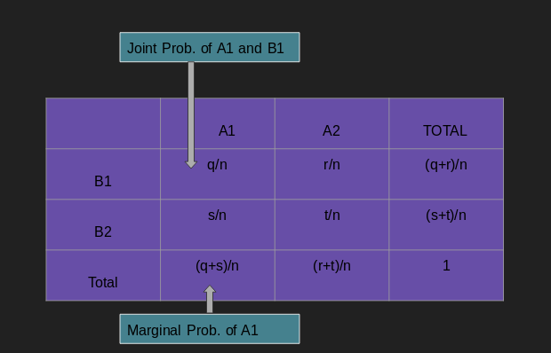

Randomness is not a property of a phenomenon. It is simply an unpredectability of occurence of events around you. It occurs in different scenarios of our life. For example, while roaming around street, you found a coin; now you would certainly look for other coin around that spot. But, there will be not any certainty or possibility or pattern of finding one. Other examples are - tossing coin / dice, fluctuating market prices for common goods.
In the field of Mathematics and probability, we assign some numerical value for identifying each of this random outcome. i.e. we use probability to quantify randomness. And, probability of certain event is calculated by the relative frequency of that event in the experiment.
In probability, the current occurrence / selection you do for your experiment is an event. For example,fliping a coin is an event.And, the act of tossing the coin is called independent trail. If you do number of trails, it is called an experiment. And, all the possible outcomes of an experiment is called sample space. So, we can say that an event is also a subset of sample space.
Another example : Suppose you need to choose a point from an interval (10, 100). Your selection E = (12, 34) is an event.
Disjoint and Independent Event¶
Disjoint event means if an event occurs than other events can't occur simultaneously. That means joint probabilit will be zero P(A and B) = 0. We can say that disjoint events are very dependent. That is : when an event occurs with certain probability, then other event will have zero chance of occurrence. For example: when tossing a coin, the result can either be heads or tails but cannot be both.
On the other hand, independent events are those where occurrence of one does not affect the occurence of another event. For example: when tossing two coins, the result of one flip does not affect the result of the other. conditions for independence P(A and B) = P(A)×P(B) P(A, given that B occurs) = P(A)
Joint and Marginal Probability¶
Joint probability measure the probability that two events will occur simultaneously and marginal probability is the probability of single event.
Joint probability is expressed as :P(A1,A2 ...,An) ; where A1, A2...An are the events.
Let us take an example:
P(life expectancy=70, nationality=Nepal) = 0.5 means there is 0.5 chances of a person, picked from a population, is a Nepali and has the life expectancy of 70 years.
Conditional Probability¶
Formally, conditional probability can be defined as the probability of an event (A); given the probability of another event (B).
Mathematically, it is denoted as P(A | B).
P(A | B) = P(A and B) / P(B) ; P(A and B) - joint probability of A and B.Let us take an example :
Consider that a student has an 70% chance of being accepted in a university, only 40% of all of the accepted students will get the student residence offer. Then the chance of student getting accepted and receiving student residence offer is defined by
P(Accepted and Student resi.) = P(Student resi.|Accepted)P(Accepted)
= (0.40)*(0.70) = 0.28 Bayes' Law¶
Let us suppose that we have a prior knowledge of a probability for a disease D to occurs when there is a symptom S P(S|D); and the probability of having disease D P(D); the probability of having symptom S P(S). If we have all these three information; we can calculate the probability of occurrence of disease D; given that the person has symptom S i.e P(D|S).
By using joint probability, P(A and B) = P(A|B) * P(A) = P(B|A) * P(B) Which leads to
P(A|B) = P(A) * P(B|A) / P(B)
(prior prob.) (Posterior prob.)
or
P(B|A) =P(A|B)P(B) / [P(A|B)P(B) + P(A|B′)P(B′)]
P(B′) is the probability of B not occurring.Example:
Suppose it has been observed empirically that the word “Congratulations” occurs in 1 out of 10 spam emails, but that “Congratulations” only occurs in 1 out of 1000 non-spam emails. Suppose it has also been observed empirically that about 4 out of 10 emails are spam. Suppose we get a new email that contains “Congratulations”.Then, what is the probability of this email being a spam?
Ans : Let C be the event representing emails having word 'Congratulations' and S be the event saying the email is spam.
Now, we need to calculate : P ( S | C ) ?
Here
P(C|S) ~= 1/10
P(C|S') ~= 1/1000
P(S) ~= 4/10
P(S') ~= 6/10
By Bayes’ Theorem: P(S|C) = P(C|S )P(S) / [P(C|S )P(S) + P(C|S')P(S')] = (1/10) (4/10) / [ 1/10 * 4/10 + 1/1000 * 6/10] = 0.985